Chapter 6 Algorithmics 4: Gaussian blues
6.1 While we wait for the other shoe to drop
Before we wade into yet another model and probability distribution to collide with data we will wander into a short aside, but definitely not a tangent. Collins and Pinch (1998) deploy the parable of the Golem from Jewish folklore to talk about the mindless, though very animated and very useful role of models in science. Another theorist, Edwin T. Jaynes (2004) uses the Josef Čapek’s native Czech word roboti to describe organic machines that end up annihilating humankind in his brother Karel’s play R.U.R (Rossum’s Universal Machines) in 1921. I like this depiction since the word and the play intersect with Fisher (1925) and his influential frequentist commandeering in 1925 of the inverse probability approach known to Gauss, Poisson, and even Bernoulli. So are we building robotic golems?
After all we are just building machines, some toy, some production, all not thinking, but sometimes acting like they are in our reverie that fantasizes a reification. Whatever the golem or robot does it is because we tell it to do so, and it will inexoribly and logically. Bernoulli’s binomial distribution, Poisson’s integer count distribution, and Gauss’s so-called normal, bell-shaped, distribution are such robots. They will do what we tell them to, even if we do not realize what it is exactly what we instructed them to do. But often we will interpret a robot’s abstractions as a real thing, which it emphatically is not. Thus it is with deep learning and AI, context-free grammars, digital journalism, algorithmic stock trading, driver-less cars, advertisments just for us.
6.2 Is there more to life than just counting?
Yes indeed there is! In factor if we sub-divide integer counts of rocket launches, raptor sitings, hydro-dam failures into those murky areas of what’s between 1 and 2 or 32 and 33, we arrive at continuous data. Is there an observational model we can deploy to guide our thinking about the plausibility of seeing a datum?
Let’s recall why we discuss any of these issues at all. Suppose we are trying to make wage policies, or perhaps, write a contract with employees in wages, among other issues. It is a known-unknown. We conduct a discussion with a few of our closest franalysts (friends who happen to be analysts). Here is the first set of marks we make on a board.
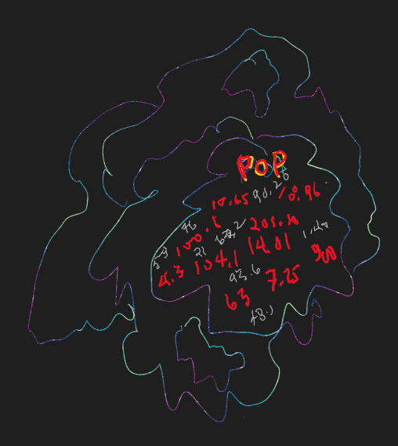
POP is short for population. We have a population of wages out in the clouding of unknowing. It is a known-unknown with lots of experience with wages to back up the knowing. We take some samples from this cloud of unknowing about the known-unknown patterns of wages.

Only five samples fit on the board. Someone comes up with the bright idea of depicting a range of wages from smallest to largest on the horizontal axis and the index number of each sample on the vertical axis. In this 2 dimensional field we plot the range of wages for each sample. We note some ideas like these are known but realize we most likely have not observed lots of other wage possibilities. Then someone mentions the scary word unknown.
In any case the klatch of franalysts (we really have to find a better name!) decide to enumerate the arithmetic averages and simple range of wages for each of the five samples.
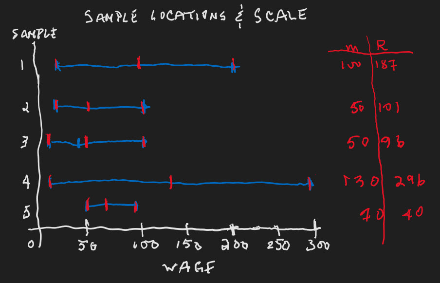
This rather tidy plot and table summarizes the product of the brain storming session. The friendly, but often boisterous, and sometimes opinionated, analysts realize they need an observational model to help them select which of the five combinations of location (average) and scale (range) is the most plausible. They also realize that the wage data itself is not binary and is not integer valued. The analysts then realize they can’t use the binomial or Poisson observational models. What are they to do?
Someone, then all of them, had the insight to use all of the data at their disposal. They reasoned there are many possible ways in which location and scale can combine to represent the population whence they drew the samples. They decide to use both the, as yet unknown, mean and standard deviation of wages as their approach to the problem of making as objective a statement they can about the population of wages. They need an observational of the joint probability of observing wages and conjecturing mean and standard deviation of wages.
6.3 Gauss, Gauss, where is Gauss?
Gauss did not have to really invent the normal distribution. We observe much physical, chemical, biological, psychological, social, economic, even financial behavior that appears on first glance to be Gaussian. Here are three examples from the business domain.
Full-time equivalent employees
Compound revenue growth
Continuous stock returns and rates
6.3.1 Full time equivalent
The Full time equivalent (FTE) measure helps us understand intensity of staffing against salary and benefits, among other issues. The calculation can be as simple as adding up all the employees, whether full or part-time, say a head count of 5 people, and the hours worked in a week by the 5 people, say 120 hours. If we assume a 40 hour week, then the full time equivalent number of employees per week in a 40 hour week would be 120 hours divided by a 40 hours/full-time work week to equal an FTE of 3. Is this Gaussian?
Suppose we sum up a week’s worth of hours per day. Each day’s hours is again uniformly distributed, this time from 100 to 200 hours summed over a 5 day period. This is not the same necessarily as multiplying one day’s simulation times 5, or is it?
hours <- replicate( 10000, sum(runif(1, 15, 30) + runif(1, 15, 30) + runif(1, 15, 30) + runif(1, 15, 30) + runif(1, 15, 30)))
summary(hours)## Min. 1st Qu. Median Mean 3rd Qu. Max.
## 81 106 112 113 119 147fte <- hours / 40
dens( fte , norm.comp=TRUE )
The average FTE is 2.75 people equivalent in this very symmetrical density. Again, why? Whatever the average value of the source distribution, here 113 hours, each sample from the source will be a deviation from this average. The summary shows a nearly equal quartile and minimum or maximum set of fluctuations from the mean. Adding up the deviations from the mean always equals zero algebraicly if we use the arithmetic mean. The range of the uniformly distributed hours is 75 hours per week while the simulation’s range is smaller at about 65 hours. The deviations are whittled down as they sum up. Where did they go? They began to offset one another. Large deviations offset large negative ones. The more terms the more ways these large movements offset one another one for one or in sums of smaller deviations that add up to the same large movements. The mostly ways to realize sums are those that aggregate around the mean.
6.3.2 Compound growth
Suppose we have 1 quarter of growth in revenue. The quaterly rate of growth takes a $1 of revenue at the beginning of month 1 of the quarter, which grows at the first month’s rate \(g_1\) into \(1+g_1\). This amount grows into \((1+g_1) + (1+g_1)g_2 = (1+g_1)(1+g_2)\). This end of second month accumulated growth becomes \((1+g_1)(1+g_2) + (1+g_1)(1+g_2)g_3 = (1+g_1)(1+g_2)(1+g_3)\) by the end of the quarter and month 3. Is this Gaussian?
Let’s suppose that growth rates are uniformly distributed from -0.1 to 0.1. Then one path for quarterly (1 plus) might be \((1+0.08)(1+(-0.02))(1+0.05)=\) 1.11. Simulating growth 10000 times and viewing our work in the density plot shows the approximation to a theoretical normal distribution.
growth <- replicate( 10000 , prod( 1 + runif(12,-0.1,0.1) ) )
dens( growth , norm.comp=TRUE )
Not bad, but look at those tails! Yes, if we are willing to accept no wild swings on average in growth, then this model might help us understand patterns in revenue growth. Why Gaussian? It appears that growth will progress and decline, sometimes adding a lot or deducting a lot, but the cumulative impact will tail off as the month to month changes may even wipe each other out. As long as growth changes impact each successive month in ever smaller ways relative to the accumulative of previous months, then the impact will be Gaussian distributed. Isn’t multiplication a shill for summation?
6.3.3 Log products
… are 2x4 pine boards. Yes, and no. Our log products again turn into sums. Let’s see how. The logarithm can be defined in terms of growth.
\[ g = log(e^g) \]
The role and function of a logarithms to a base \(b\) is just to return the exponent \(x\) of the exponential \(b^x\). Also since
\[ e^{g_1}e^{g_2}e^{g_3} = e^{g_1+g_2+g_3} \]
Then
\[ g_1+g_2+g_3 = log(e^{g_1+g_2+g_3})=log(e^{g_1} e^{g_2} e^{g_3}) \]
Products become sums with logarithms. And so it is with compound growth.
\[ log[(1+g_1)(1+g_2)(1+g_3)] = log(1+g_1)+log(1+g_2)+log(1+g_3) \]
Just another sum and also Gaussian? Let’s see.
growth <- replicate( 10000 , log(prod( 1 + runif(12,-0.1,0.1)) ) )
dens( growth , norm.comp=TRUE )
Again large deviations from the mean of 0 will offset large negative deviations. Sums of small large deviations will offset large negative deviations and vice-versa. What’s left is an accumulation of the rest of the deviations. These become the most likely deviations large negatives with small positives and large positives with small negatives. If our data looks like a process in which large deviations offset small deviations in positive (greater than the mean) and negative (less than the mean), then a Gaussian distribution might be useful to approximate the behavior of the process.
This model of log growth rates, and discounts, is the mathematical description of the percentage change of continuously compounded stock prices, revenue, cost, any financial statement item.
6.4 Assume and simplify
We will build our first Gaussian model here and now. Our first simplifying assumption is
Samples of data are independent of one another, and identically distributed too, also known as IID
We take a deep breath and sigh, that can’t be true! It is not, for it is true only in our mind and in the programming of our Gaussian robot. IID does not really exist, it is an artificial mind’s version of a can-opener that allows us to sort systematic and regularly occuring events from unsystematic movements in various outcomes. If systematic, then we have the job of describing how unsystematic deviations from the systematic might occur, how large they might be, how frequently they might occur, how lop-sided they make the distribution of our dreams. That is the character of the data we imagine and program into our robot.
Our second assumption is that
If all you know is the mean and standard deviation, use Gaussian.
Less of an assumption than an implication of how we know or don’t know about anything. That’s epistemology for you! This branch of philosophy asks a profound question, what is knowledge? The answer is well beyond what we are considering here, but which we use anyway,
A variate will depend on another variate(s) only in a straight, so-called linear, way.
From a distance, a twenty-one sided polygon, each side of which is a straight line, can look almost like a circle. It’s an approximation, and if it’s close enough, it may work for our purposes. We usually start with intercept and slope. Later on in school we learned that slopes can change, and, voila a quadratic, a cubic, a whatever, is fomenting by our fervid imaginations. We trade off these shapes with the need to explain more about that dependent variable.
There shalt be only one standard deviation of residuals.
For otherwise we have a condition called heteroskedasticity, where residuals come from different distributions. These residuals represent the unsystematic side of the relationship and why we need to reason probablistically. This is the prominent reason why there might be a multiplicity of different Gaussian distributions hidden, latent, otherwise obfuscating the view. Different distributions always means, at least in our mind and in the programming of our robot, different behaviors.
There shalt not be any meaningful relationships among explanatory variables,
for otherwise we shall have confusion and be confounded. Independent sources and inputs mean clear results, usually. The contrary condition is called multicollinearity. This is another source of obfuscation that often arises in inflammatory oratory where the orator lists ten reasons why we should vote for his or her cause, and they all wind up being just one reason, and often not a good one either, and thus the bluster.
6.5 How do we get there?
The friendly analysts with the wage problem know of a famous 2-parameter distribution, the Gaussian distribution. It is often referred to as the normal distribution.10 After running through the binomial and Poisson distributions, they don’t really think there is anything simply normal about any distribution. They will simply call it the Gaussian in honor of Carl Friedrich Gauss who used this observational distribution to compute the time elapsed between observations of a ship’s position with a chronometer, effectively, longitudes and thus the minutes and seconds in a coordinate.
With number of trials \(n\) and \(p\) probability of a single up movement in the binomial distribution then, the mean number of occurrences is \(\mu = np\) and the standard deviation is \(\sqrt{np(1-p)}\). Suppose we now perform an ever increasing number of trials \(n\), that is we let \(n\) get ever larger. In the limit as \(n\rightarrow \infty\) there is mathematics to prove that
\[ lim_{n\rightarrow \infty} {n \choose{x}} p^x (1-p)^{n-x} \approx \frac{1}{\sqrt{2 \pi \sigma^2}} e^{-\frac{1}{2}z^2} \] where,
\[ z = \frac{x - \mu}{\sigma} \] Whenever we see \(\pi\) there is definitely a circle involved! In fact this model is very similar to the development of Ptolemy’s geocentric model of the movement of planets about the earth.
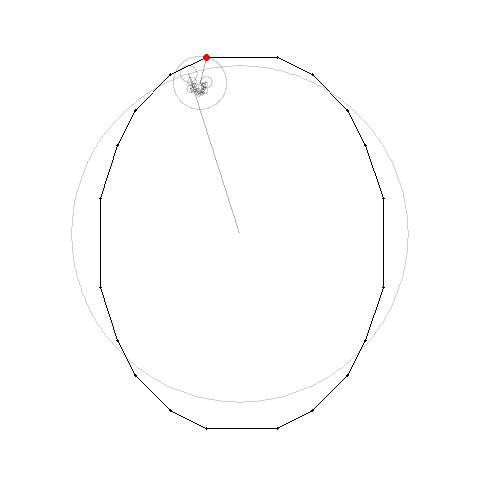
We note well that this model worked extremely well for ancient astronomers who predicted seasons for agriculture and flood events.
6.6 Grid lock
The analysts collect 12 average monthly observations of wages from the Current Population Survey of the U.S. Census Bureau. Since the wage rates (in $/hour) are averages and thus weighted sums, they believe that a reasonable observational model could be the Gaussian (normal) distribution. Here is the panel of data.
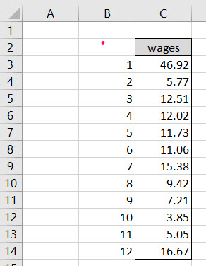
We can work with the Gaussian distribution in a number of ways. As an observational model we will need to build a grid of potential hypotheses. Each hypothesis is a combination of a mean and a standard deviation. First we make a list of \(\mu\)s and another list of \(\sigma\)s, just like we do for \(p\) in the binomial model and \(\lambda\) in the Poisson model of integer counts.
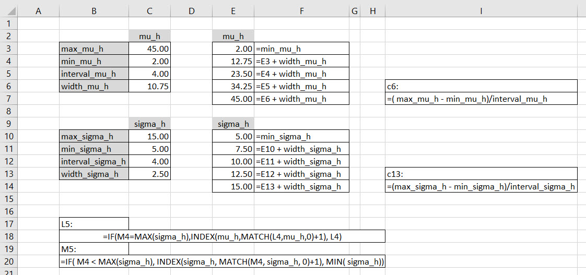
As with equally spaced grids we calculate the width of each grid node interval using the maximum and minimum of the desired grid along with the number of intervals. We then make two lists, one for mu_h and the other for sigma_h. These are the separate conjectures for \(\mu\) and \(\sigma\). As always we make cells we will refer to frequently or that are otherwise important for the integrity of the calculations as named ranges.
Now for the hard part. For each mu_h in the list we need to cycle through the entire list of sigma_hs, then go to the next mu_h where we cycle through the entire list of sigma_hs again. This will create a 2-dimensional grid of \(5 \times 5 = 25\) \(\mu,\,\sigma\) hypotheses.
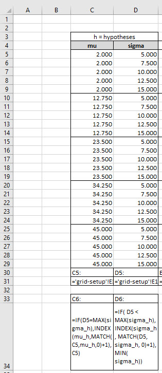
We can unpack the IF() statements in C5 and D5 by realizing that we must stay at the same mu_h only while we loop through the list of sigma_hs, otherwise move to the next mu_h. Cells C4 and D4 start the parade with the beginning entries of the mu_h and sigma_h lists.
Cell C5 tests whether the previous M4 is the end of the sigma_h list by using the MAX() function. If true then the INDEX(..., MATCH()) retrieves the next mu_h, otherwise stay at the same mu_h in cell C4.
At the same time, the IF() statement in M5 tests whether or not thesigma_hin D4 is the lastsigma_hin the list. If true, then go back to the beginning of thesigma_h, otherwise go to the nextsigma_h` in the list.
With the 25 node grid we then proceed exactly as we did for the Poisson raptors. This time we use a different observational model, one fit for use with finding location, \(\mu\) approximated by mu_h, and scale, \(\sigma\) approximated by sigma_h.
6.7 Onward we march
Our next stop on the magical mystery tour is the mashing together of observed data with the unobserved data of hypotheses, all 25 combinations of approximated \(\mu\) and \(\sigma\). These hypothetical parameters turn up in the Gaussian observational model thusly.
\[ Pr( x \mid \mu, \, \sigma) = \frac {1}{\sigma {\sqrt {2\pi }}}e^{-{\frac {1}{2}}\left({\frac {x-\mu }{\sigma }}\right)^{2}} \]
Yes, it is a beast, but one that will serve our purposes. What are those purposes again? We simply want to find the probability of observing sampled wage data \(x\), given a conjecture about the mean \(\mu\) and standard deviation \(\sigma\) of the population of wages. Using this probability we seek to understand the uncertainty that surrounds a plausible choice of \(\mu\) and \(\sigma\).
Here is our grid outfitted with the Gaussian observational model, rolled all the way through to the deduction of \(Pr(h \mid d) = Pr( \mu, \, \sigma \mid x)\). We recall that we must multiply each of the \(Pr( x_i \mid \mu_j,\,\sigma_j)\), for each observed, sampled, wage \(x_i\) given just one of the hypothesized combinations of \(\mu_j\) and \(\sigma_j\).
Here is the whole model at work.
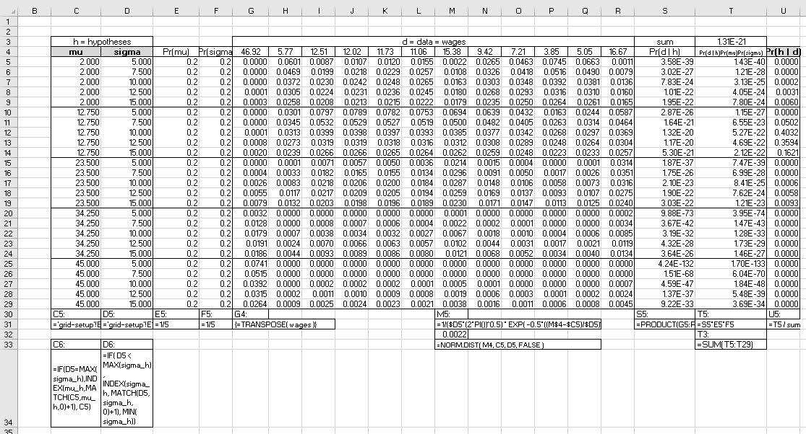
The cells which indicate the INDEX(..., MATCH()) functions inside of the IF() will be used to generate a flat, hierarchical grid. The grid in columns C and D jumps through the iterative steps of identifying \(\mu, \, \sigma\) combinations, 25 in total. We construct a unique key in column W to help us process our analysis later.
Columns E and F profess that each hypothesized \(\mu\) and \(\sigma\) is equally likely, an assumption we can change. Data from G4 through R4 comes directly from the data table using the TRANSPOSE() array function. Each column from G through R calculates the Gaussian distribution of the data in row 4 using the \(\mu, \, \sigma\) combinations one row at a time. Cell M5 illustrates one of these calculations. In cell M32 we verify the calculation using the Excel NORM.DIST() function. We notice the use of holding a column constant and a row constant to build the table. There are 300 separate conditional probabilities of individual data items given \(\mu, \, \sigma\) hypotheses.
We calculate the both-and probabilities of observing all of the data given a \(\mu, \, \sigma\) hypothesis in column S. We use the PRODUCT() function for this task in column T. Theprobability both of observing data and using the \(\mu, \, \sigma\) hypotheses is the multiplication of the column S conditional probabilities times the probability that \(\mu\) and \(\sigma\) might actually represent the population from which we sampled the data.
The marginal probability that the data is observed is the sum of column T in cell T3. We are not put off by the sometimes incredibly small numbers in these calculations! Because we remember that it is the overall contribution of these both-and probabilities that matters. We calculate the ratio of the probabilities in column T to the sum of probabilities in cell T3 altogether in column U. We have completed our analysis by starting with hypotheses, calculating the joint probabilities of data and hypotheses, and ultimately deducing the probabilities of \(\mu\)s and \(\sigma\)s given the data.
6.8 What does it all mean?
Does our grid tell us anything useful? On its own it is not in a form easy to interpret. We have the raw \(Pr(\mu,\,\sigma \mid wages)\) in column U. We did build a key in column W above. Now is the time to put it to good use. We need to calculate the total probability of any particular \(\mu\) or \(\sigma\). Here is the ultimate grid that relates each hypothesized \(\mu\) with each hypothesized \(\sigma\). The link between them is the probability both of \(\mu\) and \(\sigma\), that is, \(Pr(\mu,\,\sigma \mid wages)\) in column U.
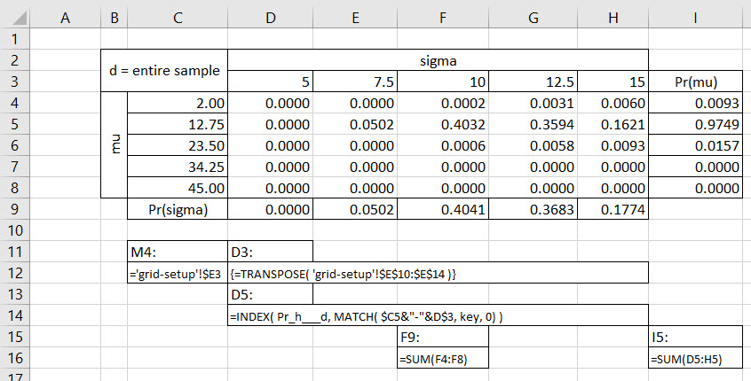
The marginal probability of \(Pr( \mu = 12.75)\) is the highest density in the I column. We calculate it realizing that this probability must take into account any of the ways in which \(\mu=12.75\) interacts jointly with each of the hypothesized \(\sigma\)s. The key word in the last sentence is the indefinite pronoun any. This pronoun denotes an either-or proposition: either \(\sigma=5\) or 7.5 or, …, 15. Either-or situatons have probabilities that add up and thus the SUM() in cell I5.
Similarly the marginal probability of \(Pr(\sigma = 10 )\) is the highest density for the hypthesized \(\sigma\)s. This probability is also the sum of the either-or probabilities of \(\sigma = 10\) interacting jointly with any of the hypothesized \(\mu\)s. We often refer to this calculation as integrating out, in this case, the \(\mu\)s for each \(\sigma\), and vice-versa for integrating out the \(\sigma\)s for each \(\mu\).
6.9 A provisional finding
Finally, one reasonable answer after all of this work is this.
An average wage of approximately $12.75, with standard deviation of $10.00, is most consistent with the data.
We must caveat this finding by noting that we used an extremely coarse grid of only 5 nodes. This underlines the approximation assumptions we deployed throughout this analysis.
6.10 Just one more thing
That sort of heading is almost an example of a outlier. We ran across two in the raptor-Poisson model. There seems to be one here in the wage data, maybe. How might we detect outliers? Since we take a probabilistic view of everything as humans, seemingly always hedging our bets, we might think about an outlier as far out into the tail of a distribution of data.
6.10.1 One way
One heuristic, a rule of thumb, due to Tukey (1977), for finding outliers uses quartiles of the data:
The first quartile \(Q1\) is a data point which is \(\leq 1/4\) of the data starting from the first data point.
The second quartile \(Q2\) or the median data point which is \(\leq 1/2\) of the data.
The third quartile \(Q3\) is a data point which is \(\leq 3/4\) of the data starting from the first data point.
From the first and third quartile we compute a measure of the scale, or width, of the data called the interquartile range (IQR), \(Q3 − Q1\). Tukey’s rule states that outliers are values more than 1.5 times the interquartile range from the quartiles
either below: \(Q1 − 1.5IQR\),
or above: \(Q3 + 1.5IQR\).
This heuristic rule can apply just as well to observed data as to unobserved hypotheses (with some computational modifications).
Here is a summary of the wage data.
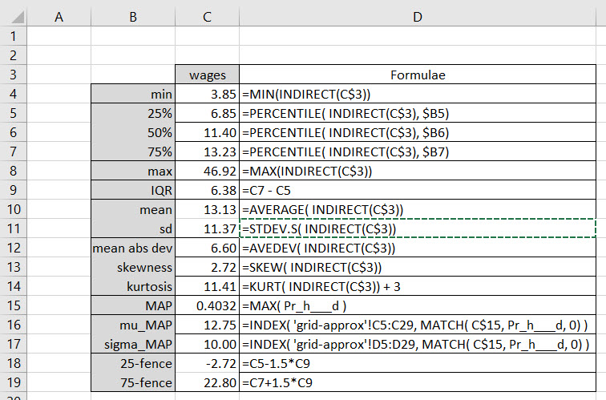
The INDIRECT() function illustrates the generic function usage where only the named range is referenced. This feature will allow us to create lists of choices so that users may interact with the model more easily. The quartiles are enabled by the PERCENTILE(). The IQR is just the distance between the 75%ile and the 25%ile, representing the middle 50% of the data.
The sample wage distribution exhibits a preponderance of positive deviations of the data from the mean, thus a large positive skew. The high kurtosis indicates high probabilities of rare events. We also know that one of the events is a greater than $45/hour wage.
We calculate Tukey’s fences with their 1.5 threshold number of IQRs above and below the 75%ile and 25%ile, respectively, in cells B18 and B19. We review the data and find that the $46.96/hour wage rate is well beyond the upper fences. It is a Tukey outlier. There are no lower fence outliers, just as there are no negative wage rates.
6.10.2 Or the other
Another, probabilistic, approach would ask how plausible is each data point relative to the center of the distribution. This is much the same idea as Tukey who uses the middle 50% IQR as a benchmark. For example we can compute the \(Pr( \mu,\,\sigma \mid d = 46.92)\) distribution. This appears in a long format grid as the following.
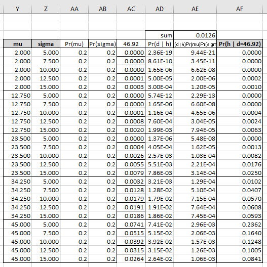
We can interpret this beast of a grid in the same as we did above. Here is the view.
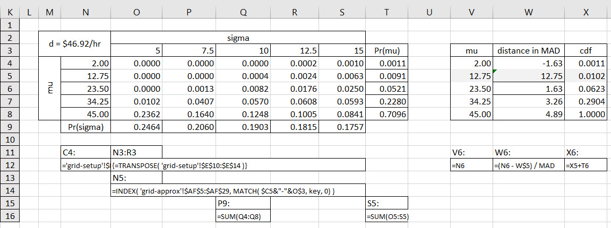
We have a \(\mu\) by \(\sigma\) table again, but set just for the pleasure of the one data point $46.92. The most plausible \(\mu=12.50\) with \(\sigma=10\). We notice here that the most plausible \(\mu_{46.92}=45\) as close as this grid will go and meet the one data point 46.92, with the smallest \(\sigma=5\) on the grid – all much in agreement with commonsense.
To the right of the \(\mu\) by \(\sigma\) table we calculate the deviation of \(\mu\) grid nodes about the most plausible \(\mu=12.75\) for the whole data set. We scale these deviations by the robust Mean Absolute Deviation (MAD) metric. The result is the number of MAD deviations a proposed \(\mu\) is from the highest density \(mu=12.75\) for the whole data set. Next to the MAD distances we calculate the cumulative probability distribution for \(\mu\)s relative to the one data point 46.92.
We now have a more principled and nuanced approach to distances from a maximum plausibility grid node applied to the entire data set. Taking each data point on its own, like 46.92, We see that it is \(1.00-0.01=0.99\) less plausible to observe an average of \(\mu=45\), near where the one data point 46.92 at 4.89 MADs from the maximum plausible \(\mu=12.75\), again for the whole data set. Yes, indeed we can call 46.92 an outlier if we want to define an outlier as a data point that is that implausible.
Implausible or not, this outpost of a data point imparts information about the population from which it was sampled. It should therefore not be ignored.
6.11 References and endnotes
References
Renowned and reviled, Karl Pearson started to use the term normal for the Gaussian distribution. He also discussed the existence of anti-matter with Einstein.↩︎